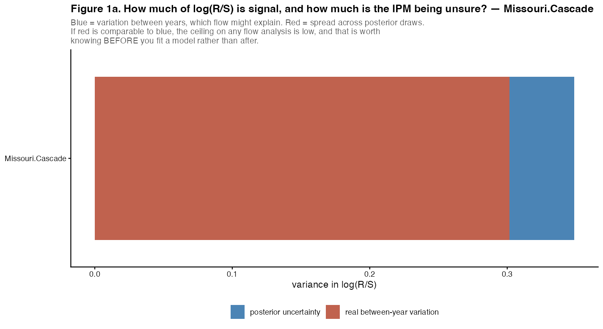
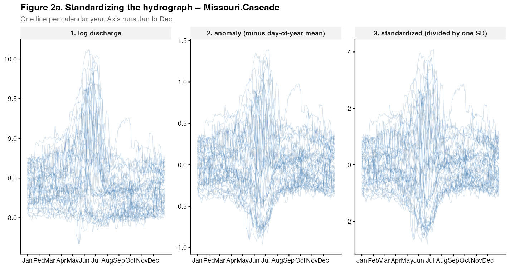
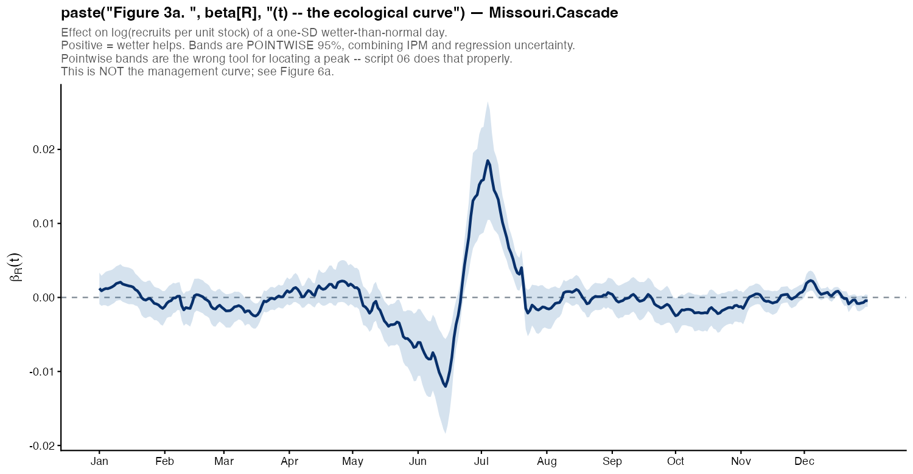
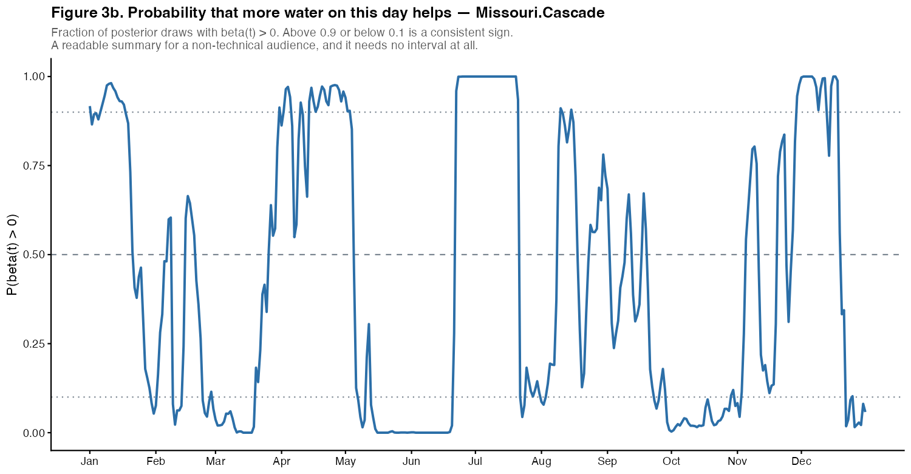
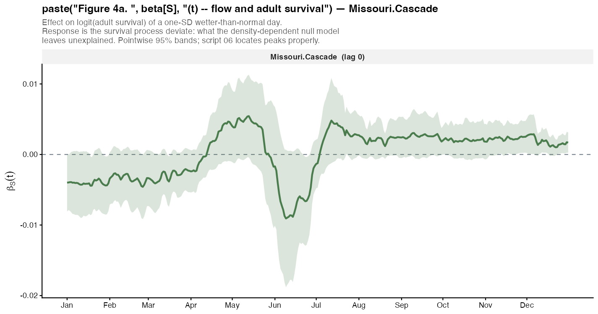
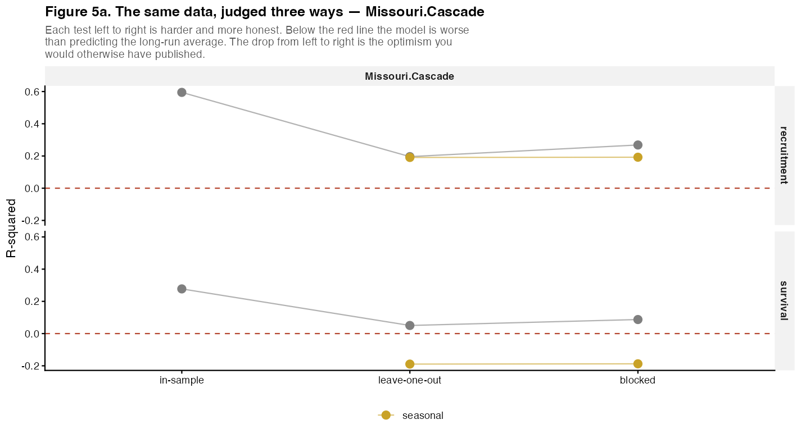
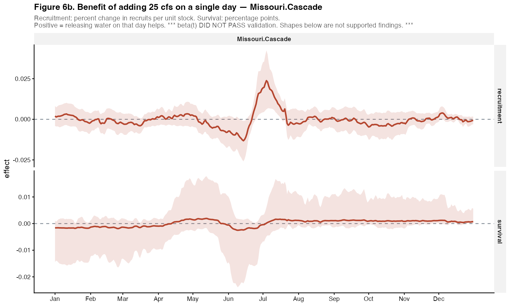
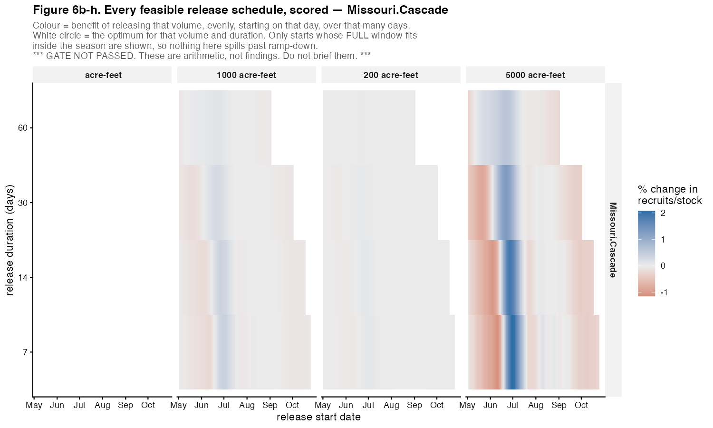

26 site(s); BoR scenarios for 8
NO GATE ROW. Validation has not been run for this site, so nothing below has a warrant. Run
R/05_validate.R.
NOT AVAILABLE - site Missouri.Cascade is not in response.rds. Run
R/01_build_response.Rto produce it.


Flow is standardized in three steps, in this order: logs, because discharge is multiplicative; minus each day’s mean across years, so a positive value means wetter than that date usually is; then divided by one global standard deviation. Dividing each day by its own SD would make a small wobble in a stable week count the same as a doubling in June.
beta(t) is a weight for every day of the year. Score a hydrograph with it and the sum is the predicted change in the response.



NOT AVAILABLE - beta(t) has not been fitted for this site. Run
R/03_fit_beta_recruitment.Rto produce it.
NOT AVAILABLE - validation has not been run for this site. Run
R/05_validate.Rto produce it.
Three numbers, failing in different ways. r2_insample is
optimistic by construction - the model has seen these years and spent
edf degrees of freedom on them. r2_blocked
holds out contiguous blocks of years, so a test year’s neighbours are
not in the training set; it can be negative, which means worse than
predicting the long-run mean. The gap between r2_loo and
r2_blocked is the autocorrelation leak that leave-one-out
was flattering. p_value is a permutation test whose
smallest attainable value is finest_p; a p equal to that
floor means no permutation did as well, not that p is precisely
that.


beta(t) is per standard deviation of log anomaly; a manager releases cfs. Dividing by that day’s baseline discharge reshapes the curve, because discharge spans more than an order of magnitude across the year. The best day to release water is often not the day with the largest beta(t).
NOT AVAILABLE - no interval rows for this site. Run
R/06_daily_sensitivity.Rto produce it.
NOT AVAILABLE - no schedule rows for this site. Run
R/06b_decision_window.Rto produce it.

| Scenario | Period | Type | process | n_years | effect | p_negative | frac_extrap | status |
|---|---|---|---|---|---|---|---|---|
| HD | 2080s | Longest Pluvial Period | recruitment | 48 | -29.857 | 0.889 | 0.150 | supported |
| HW | 2080s | Most Intense Drought Period | recruitment | 48 | -27.726 | 0.877 | 0.129 | supported |
| HW | 2080s | Longest Drought Period | recruitment | 48 | -26.268 | 0.868 | 0.145 | supported |
| HW | 2080s | Longest Pluvial Period | recruitment | 48 | -25.793 | 0.803 | 0.256 | supported |
| HW | 2080s | Most Intense Pluvial Period | recruitment | 48 | -25.793 | 0.803 | 0.256 | supported |
| HD | 2080s | Most Intense Pluvial Period | recruitment | 48 | -25.046 | 0.857 | 0.101 | supported |
| HW | 2080s | Climate Change Only | recruitment | 48 | -24.629 | 0.831 | 0.190 | supported |
| HD | 2080s | Climate Change Only | recruitment | 48 | -23.589 | 0.836 | 0.093 | supported |
| HW | 2050s | Longest Drought Period | recruitment | 48 | -23.273 | 0.872 | 0.092 | supported |
| HW | 2050s | Longest Pluvial Period | recruitment | 48 | -22.617 | 0.778 | 0.240 | supported |
| HW | 2050s | Most Intense Pluvial Period | recruitment | 48 | -22.617 | 0.778 | 0.240 | supported |
| HW | 2050s | Climate Change Only | recruitment | 48 | -22.252 | 0.812 | 0.178 | supported |
| HW | 2050s | Most Intense Drought Period | recruitment | 48 | -22.246 | 0.843 | 0.115 | supported |
| CT | 2050s | Longest Pluvial Period | recruitment | 48 | -20.536 | 0.800 | 0.181 | supported |
| CT | 2050s | Most Intense Pluvial Period | recruitment | 48 | -20.536 | 0.800 | 0.181 | supported |
| CT | 2080s | Longest Pluvial Period | recruitment | 48 | -20.509 | 0.786 | 0.164 | supported |
| CT | 2080s | Most Intense Pluvial Period | recruitment | 48 | -20.509 | 0.786 | 0.164 | supported |
| CT | 2080s | Climate Change Only | recruitment | 48 | -16.950 | 0.795 | 0.087 | supported |
| CT | 2050s | Longest Drought Period | recruitment | 48 | -16.707 | 0.806 | 0.051 | supported |
| HD | 2050s | Climate Change Only | recruitment | 48 | -16.611 | 0.806 | 0.044 | supported |
| WD | 2080s | Longest Pluvial Period | recruitment | 48 | -16.462 | 0.752 | 0.153 | supported |
| WD | 2080s | Most Intense Pluvial Period | recruitment | 48 | -16.462 | 0.752 | 0.153 | supported |
| HD | 2020s | Most Intense Pluvial Period | recruitment | 48 | -15.254 | 0.741 | 0.086 | supported |
| HD | 2080s | Longest Drought Period | recruitment | 48 | -14.728 | 0.742 | 0.036 | supported |
| CT | 2050s | Climate Change Only | recruitment | 48 | -14.707 | 0.771 | 0.088 | supported |
| HD | 2050s | Longest Pluvial Period | recruitment | 48 | -14.444 | 0.784 | 0.051 | supported |
| HD | 2050s | Most Intense Pluvial Period | recruitment | 48 | -14.444 | 0.784 | 0.051 | supported |
| HD | 2080s | Most Intense Drought Period | recruitment | 48 | -13.560 | 0.730 | 0.037 | supported |
| CT | 2080s | Longest Drought Period | recruitment | 48 | -12.706 | 0.777 | 0.028 | supported |
| CT | 2080s | Most Intense Drought Period | recruitment | 48 | -12.706 | 0.777 | 0.028 | supported |
| WD | 2080s | Climate Change Only | recruitment | 48 | -12.186 | 0.703 | 0.074 | supported |
| CT | 2020s | Longest Pluvial Period | recruitment | 48 | -11.153 | 0.676 | 0.137 | supported |
| CT | 2020s | Most Intense Pluvial Period | recruitment | 48 | -11.153 | 0.676 | 0.137 | supported |
| CT | 2050s | Most Intense Drought Period | recruitment | 48 | -10.907 | 0.748 | 0.031 | supported |
| HD | 2020s | Longest Pluvial Period | recruitment | 48 | -10.635 | 0.680 | 0.047 | supported |
| WD | 2050s | Longest Pluvial Period | recruitment | 48 | -9.513 | 0.676 | 0.051 | supported |
| WD | 2050s | Most Intense Pluvial Period | recruitment | 48 | -9.513 | 0.676 | 0.051 | supported |
| HD | 2050s | Longest Drought Period | recruitment | 48 | -9.434 | 0.702 | 0.009 | supported |
| HD | 2050s | Most Intense Drought Period | recruitment | 48 | -9.434 | 0.702 | 0.009 | supported |
| WD | 2080s | Longest Drought Period | recruitment | 48 | -8.193 | 0.661 | 0.017 | supported |
| WD | 2080s | Most Intense Drought Period | recruitment | 48 | -8.193 | 0.661 | 0.017 | supported |
| HW | 2020s | Most Intense Drought Period | recruitment | 48 | -7.681 | 0.656 | 0.081 | supported |
| WD | 2050s | Climate Change Only | recruitment | 48 | -7.306 | 0.648 | 0.047 | supported |
| WD | 2020s | Longest Pluvial Period | recruitment | 48 | -6.049 | 0.598 | 0.053 | supported |
| HD | 2020s | Climate Change Only | recruitment | 48 | -6.026 | 0.610 | 0.041 | supported |
| HW | 2020s | Climate Change Only | recruitment | 48 | -5.794 | 0.615 | 0.150 | supported |
| HW | 2020s | Longest Drought Period | recruitment | 48 | -5.487 | 0.633 | 0.103 | supported |
| WW | 2020s | Longest Pluvial Period | recruitment | 48 | -4.802 | 0.571 | 0.155 | supported |
| CT | 2020s | Climate Change Only | recruitment | 48 | -4.396 | 0.591 | 0.075 | supported |
| WD | 2020s | Most Intense Pluvial Period | recruitment | 48 | -4.018 | 0.597 | 0.050 | supported |
| HW | 2020s | Most Intense Pluvial Period | recruitment | 48 | -3.724 | 0.579 | 0.218 | supported |
| WW | 2080s | Most Intense Drought Period | recruitment | 48 | -3.560 | 0.587 | 0.134 | supported |
| WW | 2020s | Most Intense Pluvial Period | recruitment | 48 | -3.234 | 0.577 | 0.201 | supported |
| WD | 2050s | Longest Drought Period | recruitment | 48 | -2.909 | 0.589 | 0.004 | supported |
| WD | 2050s | Most Intense Drought Period | recruitment | 48 | -2.909 | 0.589 | 0.004 | supported |
| HD | 2020s | Longest Drought Period | recruitment | 48 | -2.593 | 0.582 | 0.005 | supported |
| HD | 2020s | Most Intense Drought Period | recruitment | 48 | -2.593 | 0.582 | 0.005 | supported |
| CT | 2020s | Longest Drought Period | recruitment | 48 | -2.261 | 0.576 | 0.017 | supported |
| CT | 2020s | Most Intense Drought Period | recruitment | 48 | -2.261 | 0.576 | 0.017 | supported |
| WD | 2020s | Climate Change Only | recruitment | 48 | -2.118 | 0.549 | 0.046 | supported |
| CT | Historical | Longest Pluvial Period | recruitment | 48 | -2.088 | 0.551 | 0.115 | supported |
| CT | Historical | Most Intense Pluvial Period | recruitment | 48 | -2.088 | 0.551 | 0.115 | supported |
| HD | Historical | Longest Pluvial Period | recruitment | 48 | -2.088 | 0.551 | 0.115 | supported |
| HD | Historical | Most Intense Pluvial Period | recruitment | 48 | -2.088 | 0.551 | 0.115 | supported |
| HW | Historical | Longest Pluvial Period | recruitment | 48 | -2.088 | 0.551 | 0.115 | supported |
| HW | Historical | Most Intense Pluvial Period | recruitment | 48 | -2.088 | 0.551 | 0.115 | supported |
| WD | Historical | Longest Pluvial Period | recruitment | 48 | -2.088 | 0.551 | 0.115 | supported |
| WD | Historical | Most Intense Pluvial Period | recruitment | 48 | -2.088 | 0.551 | 0.115 | supported |
| WW | Historical | Longest Pluvial Period | recruitment | 48 | -2.088 | 0.551 | 0.115 | supported |
| WW | Historical | Most Intense Pluvial Period | recruitment | 48 | -2.088 | 0.551 | 0.115 | supported |
| HW | 2020s | Longest Pluvial Period | recruitment | 48 | -1.589 | 0.554 | 0.170 | supported |
| WW | 2080s | Climate Change Only | recruitment | 48 | 0.030 | 0.524 | 0.217 | supported |
| WW | 2080s | Longest Pluvial Period | recruitment | 48 | 0.390 | 0.536 | 0.298 | supported |
| WW | 2080s | Most Intense Pluvial Period | recruitment | 48 | 0.390 | 0.536 | 0.298 | supported |
| WW | 2050s | Most Intense Drought Period | recruitment | 48 | 0.558 | 0.514 | 0.102 | supported |
| WW | 2020s | Longest Drought Period | recruitment | 48 | 1.116 | 0.529 | 0.096 | supported |
| WW | 2020s | Climate Change Only | recruitment | 48 | 1.516 | 0.510 | 0.138 | supported |
| WW | 2020s | Most Intense Drought Period | recruitment | 48 | 1.874 | 0.502 | 0.073 | supported |
| CT | Historical | Climate Change Only | recruitment | 48 | 1.903 | 0.490 | 0.082 | supported |
| HD | Historical | Climate Change Only | recruitment | 48 | 1.903 | 0.490 | 0.082 | supported |
| HW | Historical | Climate Change Only | recruitment | 48 | 1.903 | 0.490 | 0.082 | supported |
| WD | Historical | Climate Change Only | recruitment | 48 | 1.903 | 0.490 | 0.082 | supported |
| WW | Historical | Climate Change Only | recruitment | 48 | 1.903 | 0.490 | 0.082 | supported |
| WW | 2080s | Longest Drought Period | recruitment | 48 | 2.441 | 0.505 | 0.151 | supported |
| WW | 2050s | Climate Change Only | recruitment | 48 | 3.479 | 0.488 | 0.176 | supported |
| WD | 2020s | Longest Drought Period | recruitment | 48 | 4.199 | 0.460 | 0.007 | supported |
| WD | 2020s | Most Intense Drought Period | recruitment | 48 | 4.199 | 0.460 | 0.007 | supported |
| WW | 2050s | Longest Drought Period | recruitment | 48 | 5.255 | 0.453 | 0.120 | supported |
| WW | 2050s | Longest Pluvial Period | recruitment | 48 | 8.354 | 0.441 | 0.243 | supported |
| WW | 2050s | Most Intense Pluvial Period | recruitment | 48 | 8.354 | 0.441 | 0.243 | supported |
| CT | Historical | Longest Drought Period | recruitment | 48 | 12.696 | 0.361 | 0.022 | supported |
| CT | Historical | Most Intense Drought Period | recruitment | 48 | 12.696 | 0.361 | 0.022 | supported |
| HD | Historical | Longest Drought Period | recruitment | 48 | 12.696 | 0.361 | 0.022 | supported |
| HD | Historical | Most Intense Drought Period | recruitment | 48 | 12.696 | 0.361 | 0.022 | supported |
| HW | Historical | Longest Drought Period | recruitment | 48 | 12.696 | 0.361 | 0.022 | supported |
| HW | Historical | Most Intense Drought Period | recruitment | 48 | 12.696 | 0.361 | 0.022 | supported |
| WD | Historical | Longest Drought Period | recruitment | 48 | 12.696 | 0.361 | 0.022 | supported |
| WD | Historical | Most Intense Drought Period | recruitment | 48 | 12.696 | 0.361 | 0.022 | supported |
| WW | Historical | Longest Drought Period | recruitment | 48 | 12.696 | 0.361 | 0.022 | supported |
| WW | Historical | Most Intense Drought Period | recruitment | 48 | 12.696 | 0.361 | 0.022 | supported |
| HD | 2080s | Longest Pluvial Period | survival | 48 | -9.175 | 0.796 | 0.150 | supported |
| CT | 2080s | Longest Pluvial Period | survival | 48 | -7.121 | 0.762 | 0.164 | supported |
| CT | 2080s | Most Intense Pluvial Period | survival | 48 | -7.121 | 0.762 | 0.164 | supported |
| HW | 2080s | Most Intense Drought Period | survival | 48 | -6.473 | 0.676 | 0.129 | supported |
| HD | 2080s | Most Intense Pluvial Period | survival | 48 | -6.322 | 0.695 | 0.101 | supported |
| HW | 2080s | Climate Change Only | survival | 48 | -6.185 | 0.692 | 0.190 | supported |
| HD | 2080s | Climate Change Only | survival | 48 | -5.966 | 0.679 | 0.093 | supported |
| HW | 2080s | Longest Pluvial Period | survival | 48 | -5.963 | 0.703 | 0.256 | supported |
| HW | 2080s | Most Intense Pluvial Period | survival | 48 | -5.963 | 0.703 | 0.256 | supported |
| HW | 2080s | Longest Drought Period | survival | 48 | -5.963 | 0.709 | 0.145 | supported |
| CT | 2080s | Climate Change Only | survival | 48 | -4.225 | 0.704 | 0.087 | supported |
| WD | 2080s | Longest Pluvial Period | survival | 48 | -4.092 | 0.659 | 0.153 | supported |
| WD | 2080s | Most Intense Pluvial Period | survival | 48 | -4.092 | 0.659 | 0.153 | supported |
| CT | 2050s | Longest Pluvial Period | survival | 48 | -4.065 | 0.674 | 0.181 | supported |
| CT | 2050s | Most Intense Pluvial Period | survival | 48 | -4.065 | 0.674 | 0.181 | supported |
| HW | 2050s | Longest Drought Period | survival | 48 | -3.636 | 0.638 | 0.092 | supported |
| CT | 2020s | Longest Pluvial Period | survival | 48 | -3.557 | 0.670 | 0.137 | supported |
| CT | 2020s | Most Intense Pluvial Period | survival | 48 | -3.557 | 0.670 | 0.137 | supported |
| HW | 2050s | Most Intense Drought Period | survival | 48 | -3.456 | 0.631 | 0.115 | supported |
| WW | 2080s | Longest Drought Period | survival | 48 | -2.834 | 0.606 | 0.151 | supported |
| CT | 2050s | Longest Drought Period | survival | 48 | -2.823 | 0.626 | 0.051 | supported |
| HD | 2080s | Most Intense Drought Period | survival | 48 | -2.814 | 0.538 | 0.037 | supported |
| WD | 2080s | Climate Change Only | survival | 48 | -2.756 | 0.640 | 0.074 | supported |
| HW | 2050s | Climate Change Only | survival | 48 | -2.649 | 0.617 | 0.178 | supported |
| CT | 2050s | Climate Change Only | survival | 48 | -2.483 | 0.642 | 0.088 | supported |
| HD | 2080s | Longest Drought Period | survival | 48 | -2.363 | 0.530 | 0.036 | supported |
| HW | 2020s | Longest Pluvial Period | survival | 48 | -2.173 | 0.626 | 0.170 | supported |
| HD | 2050s | Climate Change Only | survival | 48 | -2.100 | 0.631 | 0.044 | supported |
| HD | 2050s | Longest Pluvial Period | survival | 48 | -1.848 | 0.618 | 0.051 | supported |
| HD | 2050s | Most Intense Pluvial Period | survival | 48 | -1.848 | 0.618 | 0.051 | supported |
| WW | 2080s | Most Intense Drought Period | survival | 48 | -1.790 | 0.581 | 0.134 | supported |
| WW | 2080s | Climate Change Only | survival | 48 | -1.787 | 0.588 | 0.217 | supported |
| HW | 2020s | Climate Change Only | survival | 48 | -1.754 | 0.599 | 0.150 | supported |
| WW | 2050s | Most Intense Drought Period | survival | 48 | -1.663 | 0.610 | 0.102 | supported |
| HD | 2020s | Most Intense Pluvial Period | survival | 48 | -1.500 | 0.568 | 0.086 | supported |
| WW | 2050s | Longest Drought Period | survival | 48 | -1.412 | 0.587 | 0.120 | supported |
| HW | 2020s | Most Intense Pluvial Period | survival | 48 | -1.351 | 0.600 | 0.218 | supported |
| CT | 2020s | Climate Change Only | survival | 48 | -1.201 | 0.579 | 0.075 | supported |
| CT | 2080s | Longest Drought Period | survival | 48 | -1.060 | 0.553 | 0.028 | supported |
| CT | 2080s | Most Intense Drought Period | survival | 48 | -1.060 | 0.553 | 0.028 | supported |
| HW | 2020s | Most Intense Drought Period | survival | 48 | -1.040 | 0.530 | 0.081 | supported |
| WD | 2050s | Longest Pluvial Period | survival | 48 | -0.994 | 0.565 | 0.051 | supported |
| WD | 2050s | Most Intense Pluvial Period | survival | 48 | -0.994 | 0.565 | 0.051 | supported |
| WW | 2050s | Climate Change Only | survival | 48 | -0.993 | 0.569 | 0.176 | supported |
| WW | 2020s | Longest Pluvial Period | survival | 48 | -0.929 | 0.545 | 0.155 | supported |
| HW | 2020s | Longest Drought Period | survival | 48 | -0.850 | 0.548 | 0.103 | supported |
| WD | 2050s | Climate Change Only | survival | 48 | -0.779 | 0.563 | 0.047 | supported |
| CT | 2050s | Most Intense Drought Period | survival | 48 | -0.754 | 0.566 | 0.031 | supported |
| HW | 2050s | Longest Pluvial Period | survival | 48 | -0.501 | 0.559 | 0.240 | supported |
| HW | 2050s | Most Intense Pluvial Period | survival | 48 | -0.501 | 0.559 | 0.240 | supported |
| WW | 2020s | Most Intense Drought Period | survival | 48 | -0.429 | 0.526 | 0.073 | supported |
| WW | 2020s | Longest Drought Period | survival | 48 | -0.327 | 0.548 | 0.096 | supported |
| HD | 2020s | Longest Pluvial Period | survival | 48 | -0.308 | 0.524 | 0.047 | supported |
| CT | Historical | Longest Pluvial Period | survival | 48 | -0.252 | 0.520 | 0.115 | supported |
| CT | Historical | Most Intense Pluvial Period | survival | 48 | -0.252 | 0.520 | 0.115 | supported |
| HD | Historical | Longest Pluvial Period | survival | 48 | -0.252 | 0.520 | 0.115 | supported |
| HD | Historical | Most Intense Pluvial Period | survival | 48 | -0.252 | 0.520 | 0.115 | supported |
| HW | Historical | Longest Pluvial Period | survival | 48 | -0.252 | 0.520 | 0.115 | supported |
| HW | Historical | Most Intense Pluvial Period | survival | 48 | -0.252 | 0.520 | 0.115 | supported |
| WD | Historical | Longest Pluvial Period | survival | 48 | -0.252 | 0.520 | 0.115 | supported |
| WD | Historical | Most Intense Pluvial Period | survival | 48 | -0.252 | 0.520 | 0.115 | supported |
| WW | Historical | Longest Pluvial Period | survival | 48 | -0.252 | 0.520 | 0.115 | supported |
| WW | Historical | Most Intense Pluvial Period | survival | 48 | -0.252 | 0.520 | 0.115 | supported |
| WD | 2080s | Longest Drought Period | survival | 48 | -0.119 | 0.495 | 0.017 | supported |
| WD | 2080s | Most Intense Drought Period | survival | 48 | -0.119 | 0.495 | 0.017 | supported |
| WW | 2020s | Climate Change Only | survival | 48 | -0.017 | 0.527 | 0.138 | supported |
| HD | 2020s | Climate Change Only | survival | 48 | 0.154 | 0.523 | 0.041 | supported |
| WW | 2020s | Most Intense Pluvial Period | survival | 48 | 0.238 | 0.514 | 0.201 | supported |
| WW | 2080s | Longest Pluvial Period | survival | 48 | 0.265 | 0.511 | 0.298 | supported |
| WW | 2080s | Most Intense Pluvial Period | survival | 48 | 0.265 | 0.511 | 0.298 | supported |
| CT | Historical | Climate Change Only | survival | 48 | 0.356 | 0.499 | 0.082 | supported |
| HD | Historical | Climate Change Only | survival | 48 | 0.356 | 0.499 | 0.082 | supported |
| HW | Historical | Climate Change Only | survival | 48 | 0.356 | 0.499 | 0.082 | supported |
| WD | Historical | Climate Change Only | survival | 48 | 0.356 | 0.499 | 0.082 | supported |
| WW | Historical | Climate Change Only | survival | 48 | 0.356 | 0.499 | 0.082 | supported |
| CT | 2020s | Longest Drought Period | survival | 48 | 0.452 | 0.464 | 0.017 | supported |
| CT | 2020s | Most Intense Drought Period | survival | 48 | 0.452 | 0.464 | 0.017 | supported |
| WD | 2020s | Longest Pluvial Period | survival | 48 | 0.593 | 0.470 | 0.053 | supported |
| WD | 2020s | Climate Change Only | survival | 48 | 0.841 | 0.448 | 0.046 | supported |
| WD | 2020s | Most Intense Pluvial Period | survival | 48 | 1.093 | 0.434 | 0.050 | supported |
| HD | 2050s | Longest Drought Period | survival | 48 | 1.099 | 0.440 | 0.009 | supported |
| HD | 2050s | Most Intense Drought Period | survival | 48 | 1.099 | 0.440 | 0.009 | supported |
| WD | 2050s | Longest Drought Period | survival | 48 | 1.343 | 0.406 | 0.004 | supported |
| WD | 2050s | Most Intense Drought Period | survival | 48 | 1.343 | 0.406 | 0.004 | supported |
| WW | 2050s | Longest Pluvial Period | survival | 48 | 1.539 | 0.463 | 0.243 | supported |
| WW | 2050s | Most Intense Pluvial Period | survival | 48 | 1.539 | 0.463 | 0.243 | supported |
| CT | Historical | Longest Drought Period | survival | 48 | 1.649 | 0.402 | 0.022 | supported |
| CT | Historical | Most Intense Drought Period | survival | 48 | 1.649 | 0.402 | 0.022 | supported |
| HD | Historical | Longest Drought Period | survival | 48 | 1.649 | 0.402 | 0.022 | supported |
| HD | Historical | Most Intense Drought Period | survival | 48 | 1.649 | 0.402 | 0.022 | supported |
| HW | Historical | Longest Drought Period | survival | 48 | 1.649 | 0.402 | 0.022 | supported |
| HW | Historical | Most Intense Drought Period | survival | 48 | 1.649 | 0.402 | 0.022 | supported |
| WD | Historical | Longest Drought Period | survival | 48 | 1.649 | 0.402 | 0.022 | supported |
| WD | Historical | Most Intense Drought Period | survival | 48 | 1.649 | 0.402 | 0.022 | supported |
| WW | Historical | Longest Drought Period | survival | 48 | 1.649 | 0.402 | 0.022 | supported |
| WW | Historical | Most Intense Drought Period | survival | 48 | 1.649 | 0.402 | 0.022 | supported |
| HD | 2020s | Longest Drought Period | survival | 48 | 1.674 | 0.381 | 0.005 | supported |
| HD | 2020s | Most Intense Drought Period | survival | 48 | 1.674 | 0.381 | 0.005 | supported |
| WD | 2020s | Longest Drought Period | survival | 48 | 2.390 | 0.333 | 0.007 | supported |
| WD | 2020s | Most Intense Drought Period | survival | 48 | 2.390 | 0.333 | 0.007 | supported |
The day-by-day attribution is the more useful panel. A scenario can hurt because flow drops on days the fish care about, or because it drops a lot on days they do not - and those call for different responses. The single number cannot tell them apart.
Extrapolation. Some scenario-years sit outside anything in the training record on more than 10% of days. beta(t) is unconstrained there. Read those rows as projections, not predictions.
| Scenario | Period | Type | n_years | mean_Q | mean_z | K | dK_pct | MS | dMS_pct | frac_extrapolating | frac_K_finite |
|---|---|---|---|---|---|---|---|---|---|---|---|
| HD | 2080s | Longest Pluvial Period | 49 | 5022.782 | 0.884 | 215.693 | -4.976 | 25.067 | -24.233 | 0.000 | 0.673 |
| HW | 2080s | Longest Drought Period | 49 | 5352.342 | 1.155 | 216.020 | -4.875 | 24.341 | -26.014 | 0.000 | 0.651 |
| WD | 2050s | Longest Drought Period | 49 | 5120.912 | 0.978 | 215.439 | -4.807 | 25.580 | -22.704 | 0.000 | 0.666 |
| WD | 2050s | Most Intense Drought Period | 49 | 5120.912 | 0.978 | 215.439 | -4.807 | 25.580 | -22.704 | 0.000 | 0.666 |
| WD | 2080s | Longest Drought Period | 49 | 5129.882 | 0.983 | 215.351 | -4.715 | 26.222 | -21.446 | 0.000 | 0.666 |
| WD | 2080s | Most Intense Drought Period | 49 | 5129.882 | 0.983 | 215.351 | -4.715 | 26.222 | -21.446 | 0.000 | 0.666 |
| CT | 2050s | Most Intense Drought Period | 49 | 5250.177 | 1.078 | 215.422 | -4.714 | 25.585 | -22.695 | 0.000 | 0.659 |
| CT | 2050s | Longest Drought Period | 49 | 5200.864 | 1.041 | 215.665 | -4.713 | 24.970 | -24.496 | 0.000 | 0.661 |
| HW | 2080s | Most Intense Drought Period | 49 | 5250.730 | 1.069 | 216.287 | -4.706 | 24.129 | -26.358 | 0.000 | 0.658 |
| WD | 2020s | Longest Drought Period | 49 | 5227.330 | 1.064 | 215.530 | -4.676 | 25.381 | -23.209 | 0.000 | 0.659 |
| WD | 2020s | Most Intense Drought Period | 49 | 5227.330 | 1.064 | 215.530 | -4.676 | 25.381 | -23.209 | 0.000 | 0.659 |
| HD | 2050s | Longest Pluvial Period | 49 | 5220.880 | 1.058 | 215.998 | -4.648 | 24.808 | -24.984 | 0.000 | 0.659 |
| HD | 2050s | Most Intense Pluvial Period | 49 | 5220.880 | 1.058 | 215.998 | -4.648 | 24.808 | -24.984 | 0.000 | 0.659 |
| HW | 2050s | Longest Drought Period | 49 | 5636.971 | 1.392 | 216.569 | -4.646 | 23.166 | -28.735 | 0.000 | 0.633 |
| CT | 2080s | Longest Drought Period | 49 | 5056.921 | 0.915 | 215.432 | -4.643 | 26.811 | -20.063 | 0.000 | 0.672 |
| CT | 2080s | Most Intense Drought Period | 49 | 5056.921 | 0.915 | 215.432 | -4.643 | 26.811 | -20.063 | 0.000 | 0.672 |
| WD | 2050s | Climate Change Only | 49 | 5496.985 | 1.274 | 216.130 | -4.635 | 23.787 | -27.269 | 0.020 | 0.643 |
| HD | 2050s | Climate Change Only | 49 | 5091.880 | 0.939 | 215.728 | -4.634 | 26.575 | -20.690 | 0.000 | 0.670 |
| HD | 2020s | Climate Change Only | 49 | 5362.138 | 1.164 | 216.133 | -4.614 | 24.131 | -26.290 | 0.000 | 0.652 |
| WD | 2050s | Longest Pluvial Period | 49 | 5507.581 | 1.290 | 216.556 | -4.603 | 23.217 | -28.638 | 0.000 | 0.641 |
| WD | 2050s | Most Intense Pluvial Period | 49 | 5507.581 | 1.290 | 216.556 | -4.603 | 23.217 | -28.638 | 0.000 | 0.641 |
| CT | 2080s | Climate Change Only | 49 | 5367.437 | 1.172 | 216.064 | -4.602 | 24.212 | -26.138 | 0.000 | 0.651 |
| HD | 2020s | Longest Drought Period | 49 | 4937.779 | 0.817 | 215.437 | -4.602 | 27.394 | -18.890 | 0.000 | 0.680 |
| HD | 2020s | Most Intense Drought Period | 49 | 4937.779 | 0.817 | 215.437 | -4.602 | 27.394 | -18.890 | 0.000 | 0.680 |
| CT | 2020s | Longest Drought Period | 49 | 5374.341 | 1.180 | 216.046 | -4.597 | 24.198 | -26.165 | 0.000 | 0.650 |
| CT | 2020s | Most Intense Drought Period | 49 | 5374.341 | 1.180 | 216.046 | -4.597 | 24.198 | -26.165 | 0.000 | 0.650 |
| HD | 2080s | Most Intense Pluvial Period | 49 | 4893.909 | 0.767 | 215.662 | -4.592 | 27.478 | -18.747 | 0.000 | 0.683 |
| WD | 2080s | Climate Change Only | 49 | 5449.826 | 1.231 | 216.274 | -4.519 | 23.571 | -27.563 | 0.000 | 0.647 |
| HD | 2020s | Longest Pluvial Period | 49 | 5382.695 | 1.187 | 216.091 | -4.513 | 23.402 | -28.120 | 0.000 | 0.649 |
| HW | 2020s | Most Intense Drought Period | 49 | 5818.743 | 1.519 | 216.718 | -4.513 | 22.760 | -29.231 | 0.061 | 0.626 |
| CT | 2050s | Climate Change Only | 49 | 5500.790 | 1.273 | 216.217 | -4.477 | 23.334 | -28.284 | 0.000 | 0.644 |
| CT | Historical | Longest Drought Period | 49 | 5755.912 | 1.477 | 216.656 | -4.477 | 22.682 | -29.446 | 0.020 | 0.628 |
| CT | Historical | Most Intense Drought Period | 49 | 5755.912 | 1.477 | 216.656 | -4.477 | 22.682 | -29.446 | 0.020 | 0.628 |
| HD | Historical | Longest Drought Period | 49 | 5755.912 | 1.477 | 216.656 | -4.477 | 22.682 | -29.446 | 0.020 | 0.628 |
| HD | Historical | Most Intense Drought Period | 49 | 5755.912 | 1.477 | 216.656 | -4.477 | 22.682 | -29.446 | 0.020 | 0.628 |
| HW | Historical | Longest Drought Period | 49 | 5755.912 | 1.477 | 216.656 | -4.477 | 22.682 | -29.446 | 0.020 | 0.628 |
| HW | Historical | Most Intense Drought Period | 49 | 5755.912 | 1.477 | 216.656 | -4.477 | 22.682 | -29.446 | 0.020 | 0.628 |
| WD | Historical | Longest Drought Period | 49 | 5755.912 | 1.477 | 216.656 | -4.477 | 22.682 | -29.446 | 0.020 | 0.628 |
| WD | Historical | Most Intense Drought Period | 49 | 5755.912 | 1.477 | 216.656 | -4.477 | 22.682 | -29.446 | 0.020 | 0.628 |
| WW | Historical | Longest Drought Period | 49 | 5755.912 | 1.477 | 216.656 | -4.477 | 22.682 | -29.446 | 0.020 | 0.628 |
| WW | Historical | Most Intense Drought Period | 49 | 5755.912 | 1.477 | 216.656 | -4.477 | 22.682 | -29.446 | 0.020 | 0.628 |
| HW | 2080s | Climate Change Only | 49 | 5483.655 | 1.252 | 216.694 | -4.465 | 23.196 | -28.608 | 0.020 | 0.645 |
| CT | 2080s | Longest Pluvial Period | 49 | 5637.980 | 1.396 | 216.717 | -4.435 | 22.740 | -29.312 | 0.000 | 0.633 |
| CT | 2080s | Most Intense Pluvial Period | 49 | 5637.980 | 1.396 | 216.717 | -4.435 | 22.740 | -29.312 | 0.000 | 0.633 |
| CT | 2020s | Climate Change Only | 49 | 5797.543 | 1.496 | 217.133 | -4.383 | 22.496 | -29.846 | 0.061 | 0.629 |
| HW | 2050s | Most Intense Drought Period | 49 | 5602.274 | 1.351 | 216.820 | -4.375 | 23.108 | -28.801 | 0.000 | 0.638 |
| HW | 2020s | Longest Drought Period | 49 | 5929.127 | 1.597 | 217.158 | -4.375 | 22.481 | -30.013 | 0.061 | 0.622 |
| WD | 2020s | Climate Change Only | 49 | 5689.709 | 1.418 | 216.736 | -4.319 | 22.701 | -29.366 | 0.000 | 0.634 |
| HD | 2020s | Most Intense Pluvial Period | 49 | 5484.117 | 1.258 | 216.655 | -4.229 | 22.980 | -28.987 | 0.000 | 0.646 |
| WW | 2020s | Most Intense Drought Period | 49 | 6071.272 | 1.686 | 217.662 | -4.212 | 22.289 | -30.545 | 0.102 | 0.619 |
| HD | 2050s | Longest Drought Period | 49 | 4804.218 | 0.695 | 215.548 | -4.205 | 28.052 | -17.098 | 0.000 | 0.692 |
| HD | 2050s | Most Intense Drought Period | 49 | 4804.218 | 0.695 | 215.548 | -4.205 | 28.052 | -17.098 | 0.000 | 0.692 |
| WD | 2080s | Longest Pluvial Period | 49 | 5756.721 | 1.482 | 217.468 | -4.171 | 22.415 | -30.354 | 0.000 | 0.627 |
| WD | 2080s | Most Intense Pluvial Period | 49 | 5756.721 | 1.482 | 217.468 | -4.171 | 22.415 | -30.354 | 0.000 | 0.627 |
| HD | 2080s | Climate Change Only | 49 | 4763.140 | 0.636 | 215.697 | -4.147 | 28.160 | -16.669 | 0.000 | 0.696 |
| WD | 2020s | Most Intense Pluvial Period | 49 | 5755.292 | 1.471 | 217.447 | -4.085 | 22.423 | -30.350 | 0.020 | 0.630 |
| WW | 2020s | Longest Drought Period | 49 | 6178.933 | 1.767 | 218.043 | -3.996 | 22.127 | -30.709 | 0.102 | 0.614 |
| HW | 2050s | Climate Change Only | 49 | 5857.682 | 1.537 | 218.318 | -3.961 | 22.168 | -30.707 | 0.020 | 0.626 |
| WD | 2020s | Longest Pluvial Period | 49 | 5806.386 | 1.513 | 218.110 | -3.924 | 22.096 | -30.840 | 0.000 | 0.627 |
| WW | 2050s | Most Intense Drought Period | 49 | 6123.746 | 1.730 | 218.326 | -3.906 | 21.968 | -30.763 | 0.082 | 0.615 |
| CT | 2050s | Longest Pluvial Period | 49 | 5802.974 | 1.518 | 218.360 | -3.889 | 21.983 | -31.097 | 0.000 | 0.625 |
| CT | 2050s | Most Intense Pluvial Period | 49 | 5802.974 | 1.518 | 218.360 | -3.889 | 21.983 | -31.097 | 0.000 | 0.625 |
| WW | 2080s | Most Intense Drought Period | 49 | 6175.751 | 1.763 | 218.306 | -3.888 | 21.932 | -30.918 | 0.102 | 0.614 |
| HD | 2080s | Longest Drought Period | 49 | 4490.558 | 0.386 | 215.698 | -3.888 | 28.836 | -14.696 | 0.000 | 0.717 |
| HW | 2020s | Climate Change Only | 49 | 6147.758 | 1.744 | 218.419 | -3.855 | 21.931 | -31.220 | 0.122 | 0.615 |
| HW | 2080s | Longest Pluvial Period | 49 | 5652.297 | 1.391 | 217.198 | -3.842 | 22.483 | -29.882 | 0.000 | 0.635 |
| HW | 2080s | Most Intense Pluvial Period | 49 | 5652.297 | 1.391 | 217.198 | -3.842 | 22.483 | -29.882 | 0.000 | 0.635 |
| HD | 2080s | Most Intense Drought Period | 49 | 4397.847 | 0.302 | 215.647 | -3.758 | 29.013 | -14.146 | 0.000 | 0.725 |
| HW | 2020s | Longest Pluvial Period | 49 | 6224.456 | 1.802 | 218.442 | -3.718 | 21.844 | -31.582 | 0.102 | 0.611 |
| WW | 2080s | Longest Drought Period | 49 | 6243.128 | 1.821 | 218.695 | -3.639 | 21.697 | -31.775 | 0.102 | 0.609 |
| WW | 2050s | Longest Drought Period | 49 | 6267.920 | 1.832 | 218.750 | -3.635 | 21.673 | -31.751 | 0.143 | 0.610 |
| CT | Historical | Climate Change Only | 49 | 6170.889 | 1.761 | 218.794 | -3.630 | 21.654 | -31.818 | 0.122 | 0.614 |
| HD | Historical | Climate Change Only | 49 | 6170.889 | 1.761 | 218.794 | -3.630 | 21.654 | -31.818 | 0.122 | 0.614 |
| HW | Historical | Climate Change Only | 49 | 6170.889 | 1.761 | 218.794 | -3.630 | 21.654 | -31.818 | 0.122 | 0.614 |
| WD | Historical | Climate Change Only | 49 | 6170.889 | 1.761 | 218.794 | -3.630 | 21.654 | -31.818 | 0.122 | 0.614 |
| WW | Historical | Climate Change Only | 49 | 6170.889 | 1.761 | 218.794 | -3.630 | 21.654 | -31.818 | 0.122 | 0.614 |
| HW | 2050s | Longest Pluvial Period | 49 | 6081.855 | 1.715 | 218.882 | -3.615 | 21.606 | -31.906 | 0.041 | 0.614 |
| HW | 2050s | Most Intense Pluvial Period | 49 | 6081.855 | 1.715 | 218.882 | -3.615 | 21.606 | -31.906 | 0.041 | 0.614 |
| WW | 2020s | Climate Change Only | 49 | 6470.090 | 1.946 | 219.848 | -3.449 | 21.413 | -31.881 | 0.163 | 0.608 |
| WW | 2050s | Climate Change Only | 49 | 6483.718 | 1.962 | 219.831 | -3.448 | 21.361 | -32.093 | 0.163 | 0.606 |
| CT | 2020s | Longest Pluvial Period | 49 | 6110.933 | 1.732 | 219.806 | -3.407 | 21.405 | -32.516 | 0.041 | 0.614 |
| CT | 2020s | Most Intense Pluvial Period | 49 | 6110.933 | 1.732 | 219.806 | -3.407 | 21.405 | -32.516 | 0.041 | 0.614 |
| WW | 2080s | Climate Change Only | 49 | 6510.018 | 1.983 | 220.050 | -3.274 | 21.138 | -32.166 | 0.143 | 0.605 |
| HW | 2020s | Most Intense Pluvial Period | 49 | 6519.733 | 2.001 | 221.144 | -2.800 | 20.845 | -33.098 | 0.184 | 0.602 |
| WW | 2020s | Longest Pluvial Period | 49 | 6556.880 | 2.016 | 221.339 | -2.776 | 20.853 | -32.876 | 0.204 | 0.603 |
| CT | Historical | Longest Pluvial Period | 49 | 6647.293 | 2.091 | 223.292 | -1.795 | 20.409 | -33.780 | 0.265 | 0.597 |
| CT | Historical | Most Intense Pluvial Period | 49 | 6647.293 | 2.091 | 223.292 | -1.795 | 20.409 | -33.780 | 0.265 | 0.597 |
| HD | Historical | Longest Pluvial Period | 49 | 6647.293 | 2.091 | 223.292 | -1.795 | 20.409 | -33.780 | 0.265 | 0.597 |
| HD | Historical | Most Intense Pluvial Period | 49 | 6647.293 | 2.091 | 223.292 | -1.795 | 20.409 | -33.780 | 0.265 | 0.597 |
| HW | Historical | Longest Pluvial Period | 49 | 6647.293 | 2.091 | 223.292 | -1.795 | 20.409 | -33.780 | 0.265 | 0.597 |
| HW | Historical | Most Intense Pluvial Period | 49 | 6647.293 | 2.091 | 223.292 | -1.795 | 20.409 | -33.780 | 0.265 | 0.597 |
| WD | Historical | Longest Pluvial Period | 49 | 6647.293 | 2.091 | 223.292 | -1.795 | 20.409 | -33.780 | 0.265 | 0.597 |
| WD | Historical | Most Intense Pluvial Period | 49 | 6647.293 | 2.091 | 223.292 | -1.795 | 20.409 | -33.780 | 0.265 | 0.597 |
| WW | Historical | Longest Pluvial Period | 49 | 6647.293 | 2.091 | 223.292 | -1.795 | 20.409 | -33.780 | 0.265 | 0.597 |
| WW | Historical | Most Intense Pluvial Period | 49 | 6647.293 | 2.091 | 223.292 | -1.795 | 20.409 | -33.780 | 0.265 | 0.597 |
| WW | 2050s | Longest Pluvial Period | 49 | 6955.020 | 2.270 | 224.715 | -1.235 | 19.804 | -33.200 | 0.367 | 0.594 |
| WW | 2050s | Most Intense Pluvial Period | 49 | 6955.020 | 2.270 | 224.715 | -1.235 | 19.804 | -33.200 | 0.367 | 0.594 |
| WW | 2080s | Longest Pluvial Period | 49 | 6919.779 | 2.257 | 225.825 | -0.705 | 19.628 | -33.607 | 0.286 | 0.593 |
| WW | 2080s | Most Intense Pluvial Period | 49 | 6919.779 | 2.257 | 225.825 | -0.705 | 19.628 | -33.607 | 0.286 | 0.593 |
| WW | 2020s | Most Intense Pluvial Period | 49 | 7016.793 | 2.307 | 226.025 | -0.620 | 19.732 | -33.489 | 0.388 | 0.592 |
Section 6 asks what a year like this does. This section asks what this flow regime does if held indefinitely, which is a different question and can point the other way: a scenario that is mildly bad every year compounds at equilibrium.
K undefined in more than 10% of draws for at least one scenario. The replacement curve does not cross the 1:1 line there, so the LEVEL of K is not trustworthy. The change may still be.
| figure | file |
|---|---|
| 01_f1a | 01_f1a__Missouri_Cascade.png |
| 02_f2a | 02_f2a_Missouri.Cascade.png |
| 03_f3a | 03_f3a__Missouri_Cascade.png |
| 03_f3b | 03_f3b__Missouri_Cascade.png |
| 04_f4a | 04_f4a__Missouri_Cascade.png |
| 05_f5a | 05_f5a__Missouri_Cascade.png |
| 06_f6a | 06_f6a__Missouri_Cascade.png |
| 06_f6b | 06_f6b__Missouri_Cascade.png |
| 06b_f | 06b_f__Missouri_Cascade.png |
| 06b_h | 06b_h__Missouri_Cascade.png |
| 07_f7a | 07_f7a__Missouri_Cascade.png |
| 08_f8a | 08_f8a__Missouri_Cascade.png |
| 08_f8b | 08_f8b__Missouri_Cascade.png |
| 10_a | 10_a__Missouri_Cascade.png |